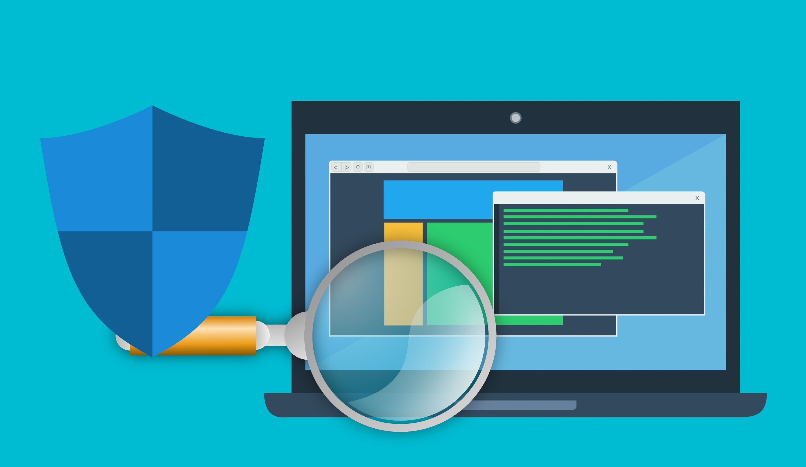

Bem-vindo ao Guia Anti-Golpe Digital!
A internet facilita nossa comunicação, nossas compras e diversas atividades do dia a dia. Porém, também exige atenção para evitar golpes e fraudes digitais.
Neste guia, você vai aprender a reconhecer situações suspeitas, identificar tentativas de golpe e conhecer maneiras de proteger seus dados e seu dinheiro.
